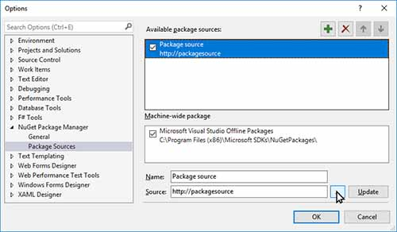
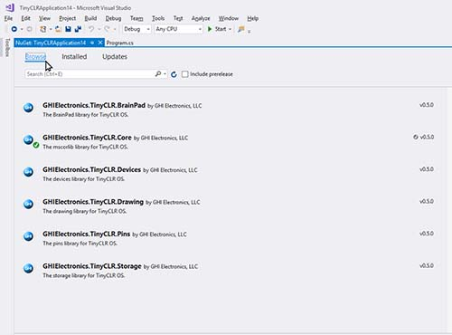

Getting Started

This page explains how to set up the TinyCLR programming environment. It covers device and computer setup and deployment of a "hello world" program.
Tip
If you're an existing user of NETMF and still want to use it in addition to TinyCLR OS, don't worry. TinyCLR is completely independent of NETMF and works side-by-side with no issues.
TinyCLR Device Setup
To use TinyCLR with a device you must first install the latest versions of the GHI bootloader and TinyCLR firmware on the device. The bootloader is installed first and provides a way to install the firmware and to execute programs which are uploaded to the device.
The TinyCLR firmware includes the Common Language Runtime (CLR) which converts compiled code into machine instructions and manages program execution. The TinyCLR firmware is also responsible for interacting with Microsoft Visual Studio to load and debug your application programs.
Instructions for installing the bootloader and firmware are provided on the documentation page for each device. If you want to use your own device, visit our porting guide for information on how to get started.
TinyCLR Computer Setup
Download and Install Visual Studio and the TinyCLR Extension
- If you don't already have Visual Studio 2017, download and install the free version from here: Visual Studio Community 2017.
- Make sure to select the
.NET desktop developmentworkload when installing Visual Studio. - Download and install the newest TinyCLR Visual Studio Project System.
Download and Install the TinyCLR Nuget Packages
- Since TinyCLR OS is still so new, we haven't yet uploaded any packages to NuGet. Download the newest libraries, extract the archive, and place them in a local NuGet feed.
- Connect your device to your PC using a USB cable (make sure your device has the latest firmware installed).
- Start Visual Studio and create a new
TinyCLR ApplicationunderC# > TinyCLR. New to Visual Studio or C#? Take a look at the getting started guide from Microsoft. Right click on your Project in the Solution Explorer and select
Manage NuGet Packages. If the Solution Explorer window is not visible, open it by selecting `Solution Explorer' in the 'View' menu.
Select the
Package Sourcesettings icon.
Click the
+button to add a new Package source.
Select the location where the NuGet packages are stored locally, by pressing the
...button. After Selecting the local folder where the downloaded NuGet packages are, you can select the
InstalledTab to view the installed NuGet Packages.
Selecting the
Browsetab will show all the NuGet packages located in your local NuGet feed. Those installed are noted with a green check mark in front of the name. To install one of the packages click on the package name, click the check box to the right under "Version(s)," and click on the
Installbutton.
Accept the licensing agreement to install the package.

And, that's it! You're now ready to start programming using TinyCLR OS.
Starting a New Project
Let's make a "hello world" program and deploy it on the FEZ Cobra III.
Open Visual Studio and select File > New > Project.
There should be a TinyCLR option under Visual C#. Click on TinyCLR in the left panel, and TinyCLR Application in the center panel. Name the project and hit the OK button to create a new project.

The project will have a single C# file named Program.cs whose contents are shown below.

C# source files are listed in the Solution Explorer window. If the Solution Explorer window is not visible, click on View > Solution Explorer to open it.

If you right click on the project name in the Solution Explorer window a drop down menu will appear. Select Manage NuGet Packages... from the menu.

Now you should see the installed TinyCLR NuGet library (GHIElectronics.TinyCLR.Core). This is the only library we will need for our "hello world" program.

Close the NuGet... tab or click on the Program.cs tab to edit the source code. Change the contents as shown below.

Make sure your device is plugged into the computer's USB port. Now hit the start button as shown on the above image (or hit the F5 key). If you've done everything correctly the program will compile and deploy to your device. The message "Hello World!" should appear in the output window as shown below.

Congratulations! You're on your way to becoming a TinyCLR embedded developer!
To learn more about TinyCLR embedded programming check out our tutorials.
You can also visit our main website at www.ghielectronics.com and our community forums at forums.ghielectronics.com.